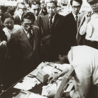
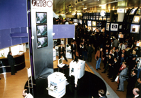
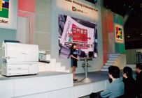

RISO RIZ
History of Riso
Riso is the name of both a printer and ink company in Japan. Company founder Noboru Hayama started his company in post-war Japan in 1946, and named it RISO, which is Japanese for “ideal”. His reasoning behind choosing this name was because he saw it was important that people should not lose their ideals during periods of despair. RISO had originally started as a printer company. However, due to the lack of available mimeograph ink, Hayama started developing his own ink to use. And after 18 months, he had successfully developed Japan’s first emulsion ink which you may know as RISO Ink.

Between 1975 to 1988, RISO created a series of fundamentally unique products for the home and the office. In 1977, RISO introduced the PRINT GOCCO model, which was meant for home use. This product became very popular soon after its release and by the end of the year had the sales had gone through the roof. RISO also developed the RISOGRAPH, an all-new printing system for the office based on its original duplicating technology. It continued to lead the field from its debut in 1980. In 1984, RISO released the RISOGRAPH 007, which integrates all functions required for mastermaking and printing into a single unit. This product created a stir at the time and was dubbed as a "printing robot", capable of realizing large-volume print jobs at high speed and low running cost while being easy to use.
Beginning in 1986 with the establishment of RISO, INC. in Massachusetts, RISO made its first debut into international markets all over the world. Soon afterwards, RISO set up a series of sales bases around the world. Nowadays, RISO markets and provides technical support for ComColor, RISOGRAPH and other products which include supplies consumables in over 180 countries and regions of the world.


In 2003, RISO launched a new generation of printers that carved the way for a new market, the RISO HC series of high-speed color printers. These printers were developed to make color printing economical and more accessible than before. These unique RISO printers were capable of fast and affordable color printing. In 2009, RISO launched the ComColor series of next-generation high-speed printers and is constantly pursuing new and bigger possibilities. RISO continues to seek even greater challenges as a development-oriented company that provides unique solutions in the paper communication field.